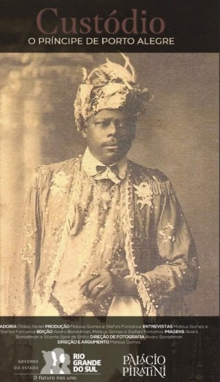
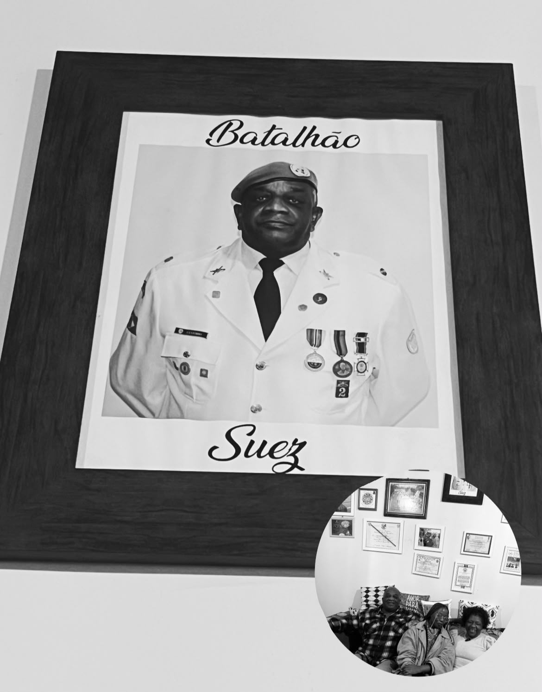
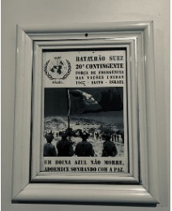
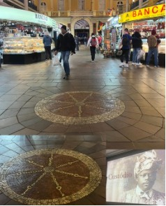

Porto Alegre · Rio Grande do Sul, BrésilNote de presseDiplomatie culturelle Bénin–Brésil
Soft power béninois
Découvert à Rio Grande do Sul, Porto Alegre, un État stratégique et puissant du Brésil.
Par Tatiana Sagbohan
Mise en contexte
Qui est le Prince Custódio ?
Éléments de découverte historique et patrimoniale au Rio Grande do Sul, Porto Alegre
Dans le cadre de ma mission de terrain au sein de l’État du Rio Grande do Sul, au sud du Brésil, j’ai eu l’opportunité d’approfondir mes recherches sur une figure majeure de l’histoire afro-brésilienne : le Prince d’Ajuda (appellation portugaise associée à Ouidah), connu au Brésil sous le nom de Custódio Joaquim de Almeida, fils de Sêgbos Sókpá (Zoki Azata), d’origine béninoise, et figure historique de Porto Alegre, dont certaines anciennes traditions biographiques lui attribuent le nom d’Osuanlele Okizi Erupé, associé à une origine nigériane aujourd’hui contestée par les recherches historiques.
Selon les récits transmis par ses descendants et les traditions locales, le Prince Custódio serait né en 1832 au Bénin avant de s’établir à Porto Alegre au début du XXe siècle. Il serait arrivé accompagné de plusieurs membres de sa cour, témoignant ainsi de son rang social élevé et de son importante stature au sein des communautés africaines de l’époque.
Installé à Porto Alegre, notamment dans le quartier historique de Cidade Baixa, où il s’éteignit en 1935 à l’âge de 103 ans, le Prince Custódio développa une influence remarquable qui dépassa largement le cadre des communautés afrodescendantes. Son prestige lui permit d’entretenir des relations suivies avec les élites politiques, administratives et économiques du Rio Grande do Sul, notamment des gouverneurs, magistrats, propriétaires terriens et personnalités influentes de la vie publique régionale.
Reconnu pour sa maîtrise des savoirs traditionnels africains, des pratiques spirituelles liées au culte Vodun ainsi que de la pharmacopée à base de plantes médicinales, il acquit une réputation considérable auprès des populations locales. De nombreuses personnalités politiques de l’époque auraient sollicité ses conseils et son assistance, contribuant à renforcer son rayonnement dans la société gaúcha.

Une mémoire béninoise vivante
Mémoire historique · Coopération Brésil–Bénin
Héritage afro-gaúcho
Au-delà de son image largement associée aux vagues d’immigration européenne, le Rio Grande do Sul recèle un patrimoine afro-brésilien d’une richesse remarquable. Porto Alegre, capitale de cet État stratégique sur les plans économique, industriel, portuaire et commercial, est également le berceau d’une mémoire afrodescendante profondément ancrée dans son histoire.
La figure du Prince Custódio s’inscrit précisément dans cette dimension souvent méconnue. Son héritage dépasse le cadre religieux pour toucher aux questions d’identité, de mémoire collective et de dialogue interculturel. À travers son histoire et celle de ses descendants, se dessine un récit singulier reliant le sud du Brésil à l’Afrique, et plus particulièrement au Bénin, ouvrant ainsi des perspectives de diplomatie culturelle, de valorisation patrimoniale et de coopération internationale.
Une descendance vivante et fière
« Chère fille, Tatiana Sagbohan, tu es la première personne externe que nous recevons chez nous, et c’est avec émotion de te savoir béninoise, la terre de mes ancêtres et arrière-grands-pères. » Propos de l’arrière-petit-fils du Prince Custódio à la consultante en relations internationales / diplomatie culturelle entre le Brésil et le Bénin.

Sur les traces du Prince Custódio : une rencontre historique au service de la mémoire, de la culture et de la coopération internationale.
Qui est Edson Germano Custódio (arrière-petit-fils du Prince Custódio) ?
- Une implication au sein du Batalhão Suez, contingent brésilien ayant participé aux opérations de maintien de la paix des Nations Unies au Moyen-Orient.
- Plusieurs références aux Forces de Paix de l’ONU et à la mémoire du Prix Nobel de la Paix 1988, attribué aux Casques bleus des Nations Unies.
- Des distinctions honorifiques liées au statut de vétéran militaire et d’ancien participant à des missions internationales.
- Une reconnaissance institutionnelle par des organisations de vétérans, des associations mémorielles et des structures militaires du Rio Grande do Sul.
- Un rôle apparent de gardien et de transmetteur d’une mémoire collective associant histoire militaire, paix internationale et patrimoine afro-brésilien.

Une mémoire béninoise devenue patrimoine brésilien
Au cœur du Marché Public de Porto Alegre, l’un des lieux les plus fréquentés et emblématiques du sud du Brésil, subsiste un témoignage exceptionnel de la présence béninoise dans l’histoire brésilienne. Le Bará du Marché, traditionnellement attribué au Prince Custódio d’Ajudá, demeure aujourd’hui un patrimoine culturel reconnu par la ville. Plus qu’un symbole religieux, il constitue une mémoire vivante de l’apport d’un ancêtre béninois à la construction du patrimoine immatériel brésilien, illustrant avec force la profondeur des liens historiques et culturels qui unissent le Bénin et le Brésil.

Conclusion
Cette séquence s’inscrit dans une démarche plus large de diplomatie culturelle et mémorielle visant à identifier, documenter et valoriser les marqueurs historiques du patrimoine béninois au Brésil. En plaçant le dialogue entre mémoire, culture et relations internationales au cœur de son action, cette mission contribue à faire émerger de nouveaux espaces de coopération et de compréhension mutuelle entre le Bénin et le Brésil. Une approche qui traduit la conviction que les héritages partagés constituent aujourd’hui encore des instruments stratégiques de rapprochement entre les nations et les peuples.
Tatiana Sagbohan
Porteuse d’une initiative pionnière de diplomatie culturelle et mémorielle autour de l’héritage du Prince Custódio entre le Bénin et le Brésil.
O. Tatiana M. Sagbohan Gbossa
Architecte de dispositifs culturels et diplomatiques dédiés aux mondes afrodescendants, axe Brésil–Bénin.
Consultante en relations internationales / diplomatie culturelle entre le Brésil et le Bénin, spécialiste en économie culturelle & interprète traductrice français–portugais.
Contact presse
tatianagbossa@gmail.com · +55 11 94074-0454 · +229 01 69 47 13 10